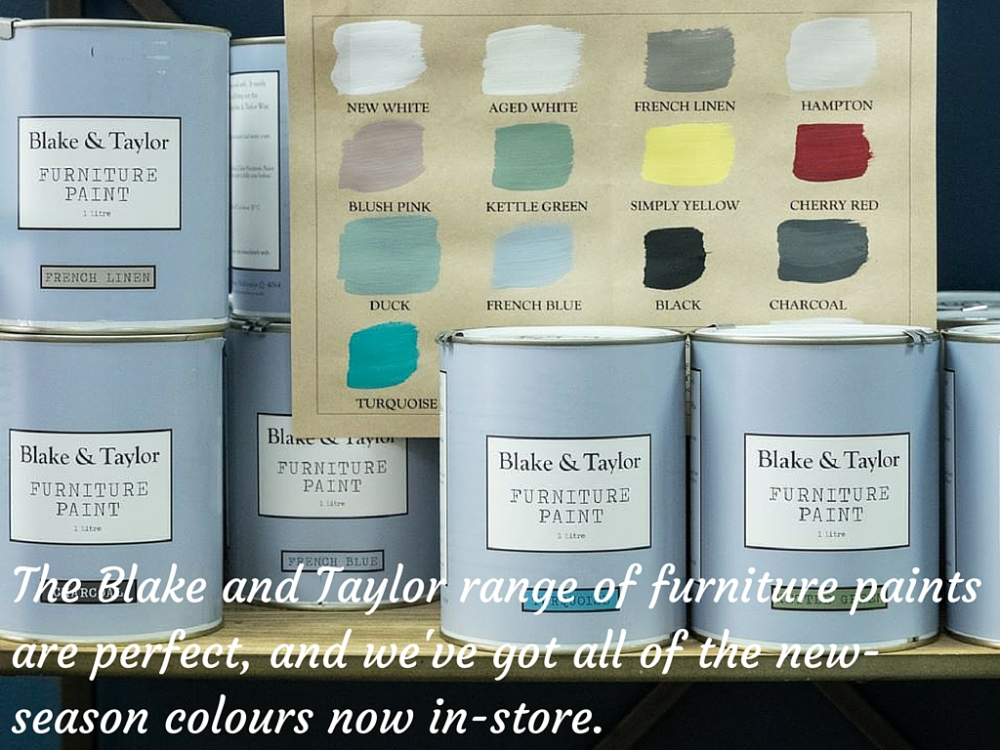

About
Tarnished Interiors specialises in quirky and cool interior, design items, including new and vintage furnishings, housewares and decorative items.
Pammy has always been a lover of collecting things for the places she has lived so that they have a more personalised feel.
Over the years her collection has grown and after much nagging by friends and family she finally decided to open a shop!
Tarnished is Pammy's creative outlet and ensures hubby doesn't have to spend every weekend help move new pieces of furniture into their home - the pieces come to the shop instead!
Tips and Tricks
Get an inside look to Pammy's brain and how she makes everything Tarnishfied.